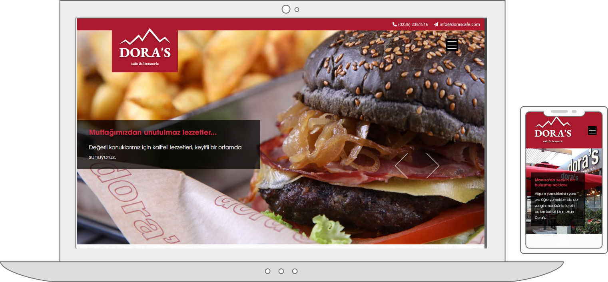
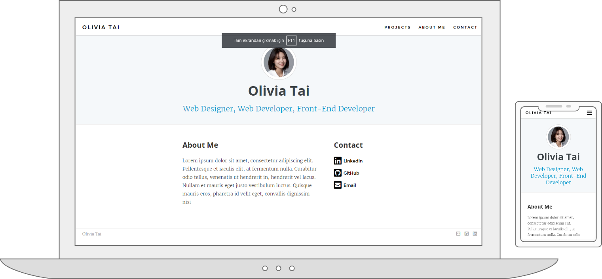
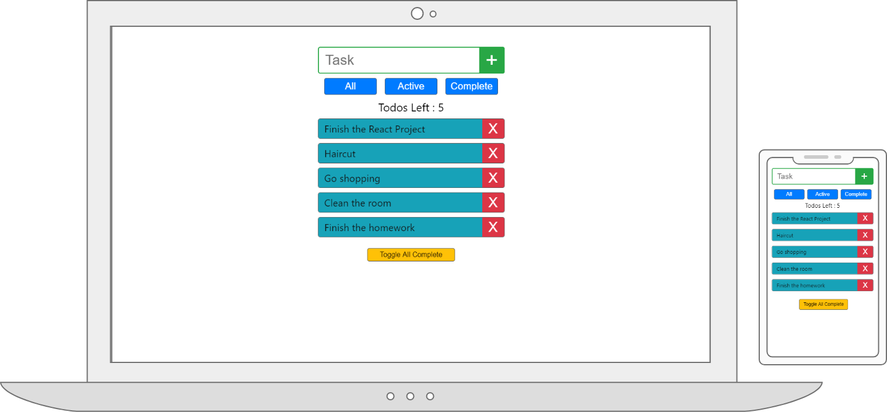

Visit Site
Doras Cafe
A Psd to Html project. I took the the design of the originial site dorascafe.com and recoded it using html, sass and javascript. Turned into working, responsive, beatifully coded site.

Visit Site
Portfolio Site
Another Psd to Html project. I used the design of the originial site ybrikman.com. Recoded with html, sass and jquery and turned into a working responsive site.

Visit Site
React ToDo App
A simple To Do app using ReactJs. I did this project to improve my React skills. And I liked to code it more than classic psd to html projects.